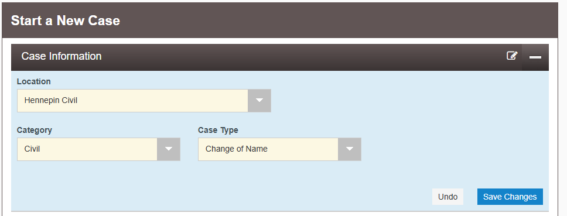
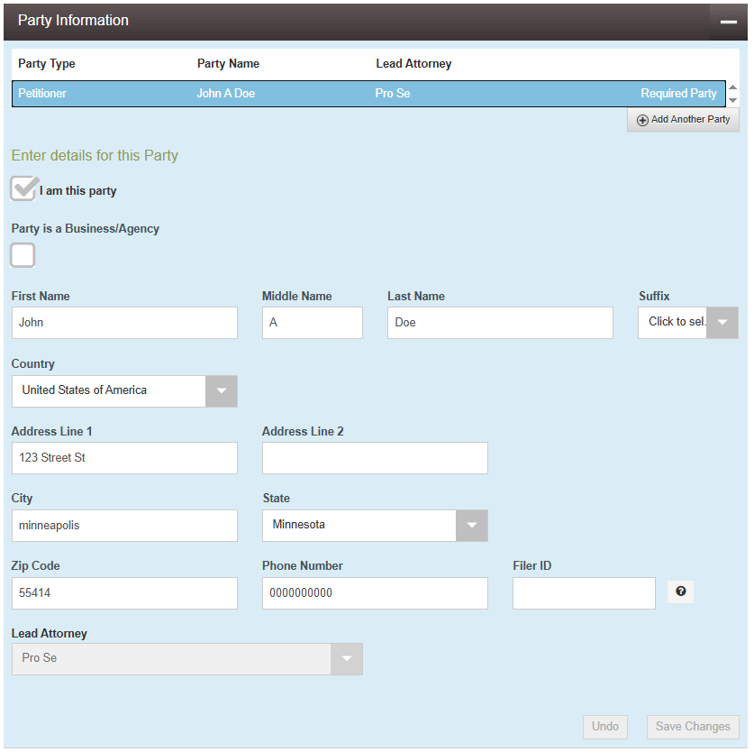
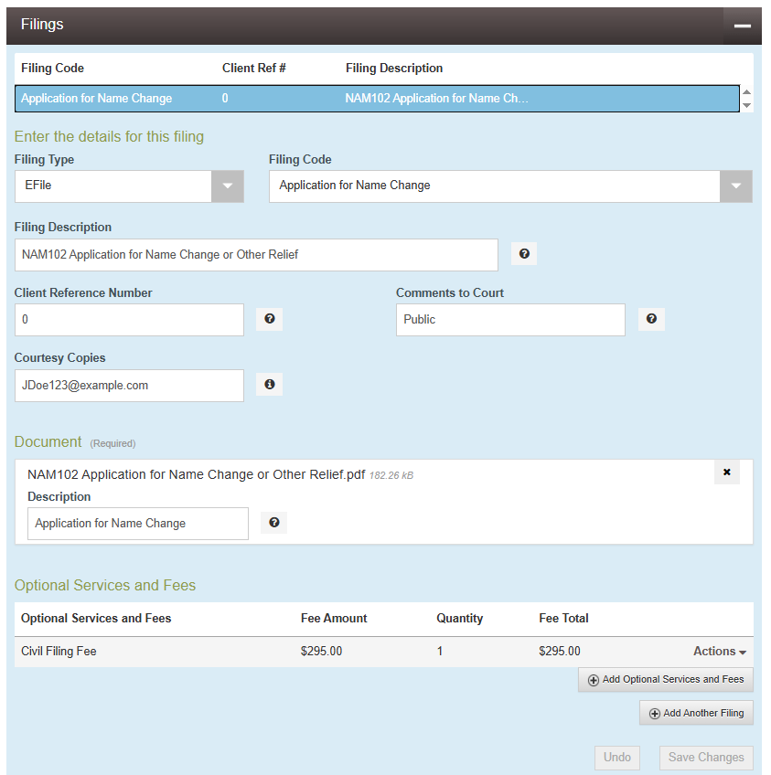
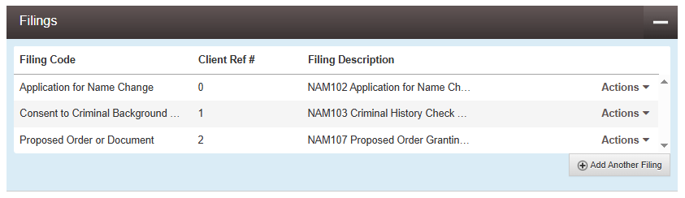

Changing your legal name in Minnesota might seem daunting, but the process basically boils down to:
Fill out some forms
File them with the court
Get a background check done
Go to a hearing
Update your Birth Certificate
Update records with Social Security Administration
Update License with DMV
It's going to take some time, but you can do it little by little :-)
In order to change your name, the state of Minnesota requires you:
Have lived in MN for 6 months
File in the county you live in
Be 18+ (unless your parents file for you)
Pay a ~$300 fee, or get it waived if you qualify
This document is NOT intended to be an exhaustive guide to legally changing your name. It is instead
a brief primer, as well as a collection of prefilled forms, intended to make the process as easy as
possible for the ~90% of people who's requirements are simple. I'm not a lawyer, and this isn't legal
advice. This guide is based on my own experience and research — double-check everything with
official sources or get legal help if you need it. This guide assumes a number of things about
you, the reader. Below are listed some of the assumptions made in this guide.
These are not requirements for changing your name, but this guide assumes you meet them for the sake
of brevity and simplicity. Please seek out additional resources if you do not meet these assumptions. This
guide will assume, unless otherwise stated, that you:
You can request an interpreter using the top of form NAM102. You can also get an
interpreter for your two required witnesses. Forms may be available in languages other than English.
The prefilled forms skip over the interpreter section, do not use them.
If you have lived in any other states as an adult, you may need to complete a
separate process with the Bureau of Criminal Apprehension to get your background check from other
states.
The prefilled forms skip over the children section. Do not use them.
The prefilled forms skip over the marriage and/or divorce section. Do not use them.
Furthermore, you may need to bring the court proof of marriage and/or divorce if your name has
changed before. One of your witnesses for your hearing should be your spouse.
The prefilled forms skip over the criminal history section. Do not use them.
The prefilled forms skip over the children section. Do not use them. Furthermore, there is
a separate set of forms for minors. Both parents must be notified.
Form NAM102 requires a description of any property you own or have an interest in. The
prefilled forms skip this. Do not use them.
Uncheck an option above to view more information. Keep track of what step you're on by clicking each
header (in large text below) as you complete each step. Your progress will be saved.
You have three options for obtaining and filling out the forms you need.
Use the Automatic Form Generator (recommended)
Simply enter your information once and the website will auto fill the PDFs for you
Use the interactive PDF Forms
These PDFs have been modified with fillable text boxes so you can type your information directly into
them
Manually edit the original PDFs using the software of your choice
This is the option you'll have to choose if you don't meet all of the assumptions in step zero.
Below are example forms that have already been filled in.
The Automatic Form
Generator will automatically build the court forms for you, skipping the need to 1) fill out
each field individually and 2) use PDF editing software. Simply enter your information into the website and
click the download buttons to get your forms.
These forms have been edited from the originals to include text boxes. Using your browser, simply enter your
information into the text boxes and save. See the instructions provided under Option 3 for help filling out
the forms.
The order that will eventually be signed by the judge.
Option 3: Use the Original Forms and Edit Them Manually
Download the forms
required from the court website here. You will need to either print and scan these or edit them
using the PDF software of your choosing. If you have been married or divorced, have children, have a
criminal history, or own land, this is the option you will be required to choose. The Automatic Form
Generator and modified PDF files have only been prepared to fit the most common cases. (why?) For various technical (and some Adobe) reasons,
editing PDFs is really challenging. I recommend avoiding this option if you can.
NAM102 Application for Name Change
Skip the header (County of, Judicial District, Court File Number)
Under "In the Matter of the Application of" enter your current legal name
Continue filling out the form using your current legal name
Enter your new name and gender marker (if desired) in #7
Sign it (you can use your new name!)
NAM103 - Criminal History Check Release
Use your current legal name and sex at birth
Enter any other names or nicknames you may have (including your new name if desired)
Sign it (you can use your new name!)
NAM107 - Proposed Order Granting Name Change
Skip the header (County of, Judicial District, Court File Number)
Under "In the Matter of" enter your current legal name
Under "For a change of name to" enter your new name
Leave a blank space for the court to enter a date after "The above entitled matter came on for
hearing before the undersigned Judge on ______"
Copy your information EXACTLY AS IT APPEARS ON 'NAM102 - APPLICATION FOR NAME CHANGE'
Do not enter anything after "It is Ordered". The court will fill this out later.
You do not need to sign this document.
If you're on government assistance or making (before tax) less than 125% of the [current year] federal
poverty guidelines you are eligible for a fee waiver. For 2025 this number is $19,562/yr for a
single
person.
If you do make less than this or are otherwise unable to pay, complete a fee waiver form. Ash Tifa's guide as well as Form NAM101 have more information on this. You will need to file a fee waiver form
alongside your other forms.
You can file in person, by mail, or online. This guide will only cover how to use the eFile system to file
online. If you would like to file in person or by mail, see Ash Tifa's guide and Form NAM101. If you need additional help, you can call or email the eFS support center.
Click "Actions", then "Payment Account". Add a payment method.


Create a new case envelope
Click "Start a New Case"
Enter your County. Select "Civil" and "Change of Name"
Enter your current legal name and address as the Petitioner

Upload your Documents (1/3)
Now we can upload our documents. Under Filing Code, enter "Application for Name Change"
Under Filing Description, enter "NAM102 Application for Name Change or Other Relief"
Client Reference Number can be any number. Just enter 0.
Comments to Court must say "Public"
Enter your email under Courtesy Copies
Upload the completed document "NAM102 Application for Name Change or Other Relief" as a .PDF
Add "Civil Filing Fee". This is about $300.
Save your changes
Upload your Documents (2/3)
There should now be a button that says "Add Another Filing", click it.
Now we can add the next document. Use Filing Code "Consent to Criminal Background Check".
Description: "NAM103 Criminal History Check Release".
Reference Number: 1.
Comments: Public.
Courtesy Copies: enter your email again.
Upload the completed document "NAM103 Criminal History Check Release" as a .PDF.
Do not add any Services and Fees.
Save.
Upload your Documents (3/3)
Add another Filing.
Filing Code: Proposed Order or Document.
Description: "NAM107 Proposed Order Granting Name Change".
Reference Number: 2.
Comments: Public.
Courtesy Copies: enter your email again.
Upload the completed document "NAM107 Proposed Order Granting Name Change" as a .PDF.
Do not add any Services and Fees.
Click save.

Finish Filing
Ignore the "Service Contracts" section.
Select your payment account and save.
Click "Summary" at the bottom.
Double check your information and click "Submit".
This will place a hold on your selected payment method. It will only go through once your files are
accepted.
If there are any problems, you will have to resubmit, and another hold will be placed on your card.
Holds are returned after about two weeks.
This is just filing the paperwork, this IS NOT committing to changing your name.
If you have doubts, you can simply choose to not schedule the hearing after this point.
If you receive an email titled "REJECTED EFILING Case 00000000", read the comments given, make the
changes, and resubmit. This will place another hold on your card, but you will eventually get the original
charge back.
If all went well, you should receive an email in a few days titled "EFILING ACCEPTED Case
[00-AB-00-00000] , In the Matter of the Application of [Deadname] for a Change of Name" or
"COURTESY NOTIFICATION OF FILING FOR Case [00-AB-00-00000], In the Matter of the Application of
[Deadname] for a Change of Name". This means you filed everything right and the court is ready to
proceed when you are. Write down your case number.
Your case should be listed as "Open" and a judge should be assigned. If there is not a judge
assigned, there should be one assigned within two weeks of your filing being accepted. Check back later.
There should be a document titled "Notice of Case Assignment", download and open it. This
document will tell you how to contact the judge's chambers, whether the hearing will be in person or
online, and any additional instructions you may need to follow.
Save the judge's chambers contact information.
Take note of any additional background check or physicians note requirements.
Each county seems to have their own requirements that change over time. You may need a certified copy of the
background check, you may not. You may need the BCA to send a form to the court, or they might be fine with
a simple image via email. The exact requirements should be in the "Notice of Case Assignment"
document. You can ask the judge's chambers for more information.
If you've lived in another state as an adult, this process will be different. Contact the Bureau of Criminal
Apprehension for more information.
You can complete the background check with a 10 minute walk in at the Bureau of Criminal Apprehension
in St. Paul or you can mail in your form and wait about two weeks. Either way it will cost ~$15.
To complete your background check in person:
Print a physical copy of NAM103 - Criminal History Check Release
You can print this form at your local library for ~$0.10/page
Hennepin county offers $5 of printing credit with a free library card
Sign the copy if it has been digitally signed already
The BCA requires physical signatures rather than electronic or typed ones.
Go the the Bureau of Criminal Apprehension
The BCA is located at 1430 Maryland Ave E, St Paul, MN 55106
Parking is free.
Make sure to bring photo ID
Go up to the desk and give them your form. This should take less than 10 minutes.
Follow any specific instructions the court may have given you. They may want the BCA to send over
the form themselves or they may be alright with you providing a copy.
You should get a letter back stating that you have no criminal history.
Using the contact information from the "Notice of Case Assignment" letter you downloaded earlier,
send the judge's chambers (office) a message asking for a hearing to be scheduled. Make sure to include
your case number.
To the chambers of [District Court Judge Jane Doe],
Hello. I'm seeking to change my legal name and gender marker. I have filed the appropriate paperwork and
have been assigned case number #AB-123-456.
I'd like to schedule a hearing as soon as possible. What, if any, upcoming dates do you have available?
I appreciate your time,
Your Name
youremail@example.com
123.456.7890
Be better than on time, BE EARLY
Bring:
TWO WITNESSES who can confirm your identity
PHOTO ID for yourself and your two witnesses. This can be a driver's license, passport, etc
PROOF OF RESIDENCE in Minnesota for 6+ months. This can be any two bills, rent receipts, or
mortgage statements.
Dress nicely.
Address the Judge as "Your Honor". Be polite and friendly.
The Judge will likely refer to you by your new name and will l c[vp se
The judge will swear you in and ask a list of routine questions to make sure you aren't committing fraud
or trying to escape a debt.
Most importantly, the judge will ask you why you're changing your name and gender marker
I said "I'm transgender and [Deadname] is a lame name for a woman" which seemed to suffice. You may
want to prepare a brief 1-2 sentence explanation.
This is mostly to fulfill the "exceptional circumstances" provision required for changing your birth
records.
If all goes well, the judge will grant your name change. Congratulations!
The judge will let you know what, if any, next steps there are.
Take a beat to celebrate the fact that the state government now recognizes your identity! 🔊 Click here to celebrate!
After the hearing, the judge will sign the order. You can get a certified copy of this order from the court
for a small fee (~$14). This is a physical copy, sealed in an envelope, that can be used for official
purposes. You will need this to change your name on your birth certificate, social security card, and
driver's license.
You can request certified copies of the order by mail, in person, or online. If you are requesting them by
mail, you will need to include a check for the fee and a self-addressed stamped envelope. If you are
requesting them in person, you can pay with cash, check, or card.